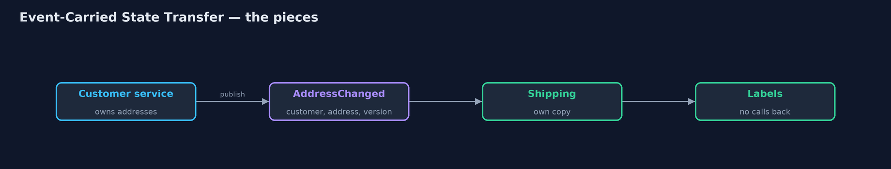
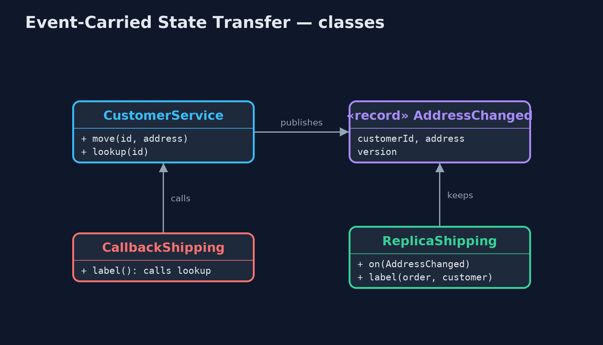
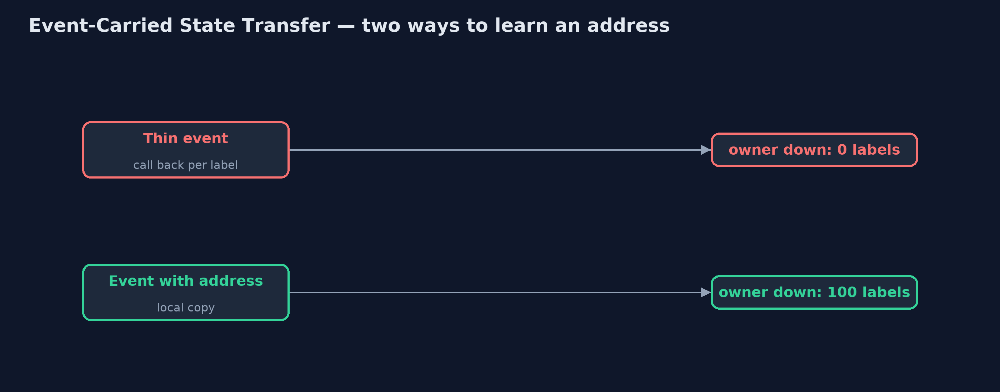
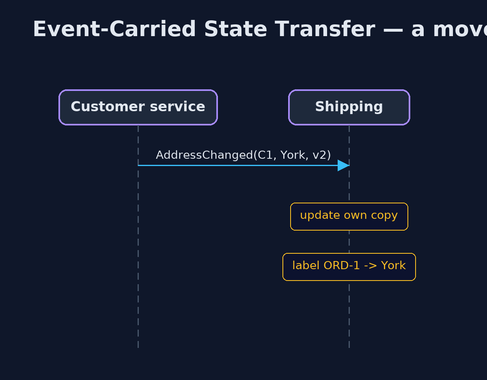

Event-Carried State Transfer Pattern
src/main/java/com/jk/explore/eventcarried/
├── Address.java A customer's delivery address
├── CallbackShipping.java Before: shipping keeps no customer data, so every label means a call to the customer service
├── CustomerService.java The owner of customer data
├── EventCarriedDemo.java The five acts: thin events with call-backs, events that carry the address, the delay window, events out of order, and the bill
├── Events.java The two kinds of event the customer service can publish
└── ReplicaShipping.java The pattern: shipping keeps its own copy of the addresses it needs, filled from the events, and never calls the customer servicePut the changed data itself in the event, so each service that cares can keep its own copy and never has to call the owner back.
Event-Carried State Transfer is a way of sharing data between services with events. A thin event only says that something changed, so every listener has to call the owner back to find out what. With event-carried state transfer, the event carries the new data itself: not "customer 42 changed", but "customer 42's address is now 9 Mill Lane, York".
Each listening service keeps its own copy of just the data it needs, kept up to date by the events. It can then work without calling the owner at all, even when the owner is down. The price is that the copy is briefly out of date, and the same data now lives in many places.
The idea in everyday terms
Think of moving house. You could send your friends a card saying "I have moved, ring me for the address", and they would all ring you. Or you send a card with the new address on it, and each friend writes it in their own address book. They can post you a letter even when you are not answering the phone.
The scenario
The online store's shipping service prints delivery labels. The customer service owns the customers' addresses. When a customer changed anything, it sent a thin event, and shipping called it back for the address, once for every label. A hundred labels meant a hundred calls, and when the customer service was down, no labels could be printed.
Run
./gradlew runThe demo tells the story in 5 acts, each printing exact numbers that the tests check:
| Act | What it shows |
|---|---|
| 1. A thin event, and a call back | Shipping keeps no addresses: 100 labels mean 100 calls to the customer service, and with it down, 0 of 100 labels are printed. |
| 2. The event carries the address | Each AddressChanged event carries the address; shipping keeps its own copy of 10, prints 100 labels with 0 calls, and still prints all 100 with the customer service down. |
| 3. The copy lags behind | C1 moves to York; a label printed before the event arrives goes to Leeds, and after the event, to York. |
| 4. Events out of order | Two moves arrive in reverse order: without versions the old Hull address wins; with versions, version 2 is ignored after 3, and Bristol wins. |
| 5. The bill | Shipping, invoicing and marketing each keep a copy of every address: bigger events, briefly stale copies, and personal data in more places. |
Test
./gradlew test4 tests in DemoRunsTest, ReplicaShippingTest. Every number the demo prints is asserted, and nothing depends on the clock, so every run gives the same result.
Technologies and versions
| Technology | Version | Used for |
|---|---|---|
| Java | 21 | the code (toolchain set in build.gradle) |
| Gradle | 9.2.1 (wrapper) | build and run, nothing to install |
| JUnit | 5.10.2 | the tests |
| videokit | repository tool | the narrated video and animation: Piper en_US-amy-medium, speed 0.8, longer pauses (the approved amy-slow voice) |
Learning Material
| Document | What it is for |
|---|---|
| Problem statement | the situation and what the project must show |
| Prerequisites | what you need to know first |
| Event-Carried State Transfer, explained | the acts in prose |
| Session guide | a one-hour lesson with exercises |
| Animated walkthrough | the acts step by step, narrated |
| Spec | what this project must be true of |
The pattern in one picture
The address travels in the event.

Where each piece sits
Thin event against fat event.

How the data moves
Ask every time, or keep a copy.

Who calls whom, in order
Shipping never calls back.

Video
video/event-carried-state-transfer-pattern-explained.mp4 (with .m4a audio and .srt subtitles) is built by video/build_video.sh. Rendered media is not committed.
What it costs
- Briefly out of date. A label printed before the event arrives uses the old address.
- Order matters. Events can arrive late or out of order; without version numbers the older address overwrote the newer one.
- Copies everywhere. Bigger events, more storage, and personal data such as addresses held by many services.
When this is too much
When a service needs the data rarely, or must always see the very latest value, calling the owner is simpler and exact. Carry state in events when many services read the data often and must keep working when the owner is down.
Where you have already met this
- Kafka topics carrying full records, often compacted to the latest per key.
- Change data capture, such as Debezium, publishing row changes.
- Read models in CQRS, built from events.
Where this sits
This project is in micro-services-design-patterns, and near Domain Event and Event Sourcing, which also build on events but for different jobs.